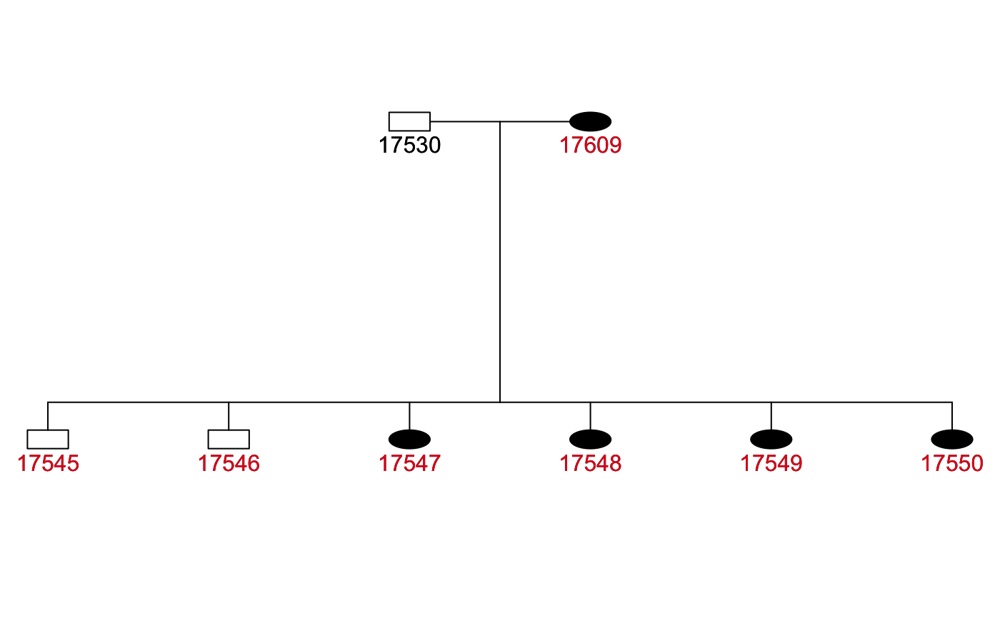
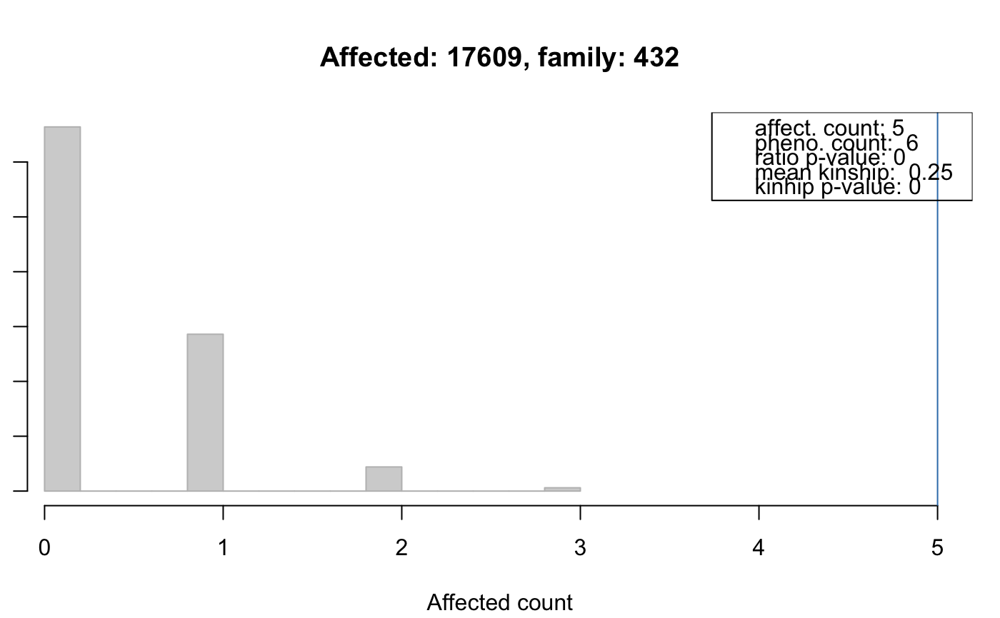

FAKinGroupResults.RdThe FAKinGroupResults object contains the results from the
kinship test. This test performs a familial aggregation
analysis on a subset of individuals within a family. Two actual tests
are conducted, a ratio test that evaluates whether the number
of affected individuals within the group is higher than expected by
chance, and a kinship test that compares the largest kinship
value between affected in the group to the one between randomly
sampled individuals.
For more details see kinshipGroupTest.
# S4 method for FAKinGroupResults
affectedKinshipGroups(object)
# S4 method for FAKinGroupResults
buildPed(object, id=NULL, max.generations.up=3,
max.generations.down=16, prune=FALSE)
<!-- % \S4method{independentGroupCount}{FAKinGroupResults}(object, method="jo") -->
# S4 method for FAKinGroupResults
plotPed(object, id=NULL, family=NULL,
filename=NULL, device="plot", ...)
# S4 method for FAKinGroupResults
plotRes(object, id=NULL, family=NULL,
addLegend=TRUE, type="density", ...)
# S4 method for FAKinGroupResults
result(object, method="BH")
# S4 method for FAKinGroupResults
runSimulation(object, nsim=50000, strata=NULL)
# S4 method for FAKinGroupResults
shareKinship(object, id=NULL)
# S4 method for FAKinGroupResults
trait(object) <- value
| addLegend | For |
|---|---|
| device | For |
| family | For |
| filename | For |
| id | For Note: |
| max.generations.down | For |
| max.generations.up | For |
| method | The multiple hypothesis testing method. All methods supported by
|
| nsim | Number of simulations. |
| object | The |
| prune | For |
| strata | For |
| type | For |
| value | For |
| ... | For |
FAKinGroupResults objects are created by the
kinshipGroupTest method for FAData
objects.
Class FAData directly.
Number of simulations.
The list containing the result of the simulation. Element
"pvalueKinship" contains the p-values from the kinship test,
"pvalueRatio" the p-values from the ratio test,
"expDensity" and "expHist" density and
hist objects representing the background distribution from
the Monte Carlo simulation.
This slot should not be directly accessed, use the result
method to extract result information.
A list of lists, each element representing one kinship group,
$aff the ids of all affected persons in that group sharing
kinship with the indivudual (being the id of the group),
$phe ids of all phenotyped individuals in the pedigree with
kinship to the individual up to a kinship being smaller or equal
to the smallest kinship of the indivudal with any other affected
in that group. $kinfreq: a table with the frequency
(counts) of kinship values (smaller 0.5). $meankin: the
mean kinship in that group.
Get groups of affected individuals in the pedigree along with
all phenotyped individuals with kinship larger or equal to the
smallest kinship between affected individuals in the
group. Returns a list of lists with elements aff,
phe, kinfreq and meankin for each list item:
aff: character vector with the ids of all affected in the
group, phe: character vector with the ids of all phenotyped
in the group, kinfreq: a table with the frequency
(counts) of kinship values (self-self kinships removed; the names of the
table correnspond to the kinship values ordered increasingly), and
meankin: the mean kinship value in the group. The names of
the list correspond to the id of the affected individual for which
the affected kinship group was determined.
Builds the pedigree for the submitted id (which represents the id
of the group, i.e. one of
names(affectedKinshipGroups(object)), respectively ids in
column "group_id" of result(object)). Building a
pedigree by submitting the family id is not supported. See details
below for more information. The resulting pedigree is returned as
a data.frame.
Plots a pedigree for one of the affected kinship groups in the
simulation results. The ids of all individuals of the affected
kinship group are highlighted in the plot in red.
See plotPed for more details on
the plotting and details below for additional settings.
Plots the distribution of counts of randomly sampled affected counts within the kinship group along with the actually observed kinship sum.
Returns the result from the simulation as a data.frame with
columns:
"trait_name": the name of the trait.
"total_phenotyped": the total number of phenotyped
individuals in the trait.
"total_affected": the total number of affected individuals
in the trait.
"phenotyped": the number of phenotyped individuals in all
analyzed kinship groups.
"affected": the number of affected individuals in all
analyzed kinship groups.
"group_id": the id for the kinship group (represents the id
of one of the affected individuals in the group).
"family": the family id of the affected/group.
"group_phenotyped": the number of phenotyped individuals in the
current kinship group.
"group_affected": the number of affected individuals in the
current kinship group.
"ratio_pvalue": the p-value from the ratio test.
"ratio_padj": the p-value from the ratio test adjusted for
multiple hypothesis testing using the method specified with
argument method.
"mean_kinship": the mean kinship value between all
individuals in the current kinship group.
"kinship_pvalue": the p-value from the kinship test.
"kinship_padj": the p-value from the kinship test adjusted
for multiple hypothesis testing using the method specified with
argument method. The data.frame is sorted by column "ratio_pvalue",
its rownames correspond to the "group_id".
Performs the simulation analysis based on the pedigree and trait
information stored in the object. Optionally allows to perform
stratified sampling. Returns a FAKinGroupResults
with the results of the simulation.
Returns a character vector with ids of all individuals that share
kinship with any of the individuals in the kinship group
identified by the argument id.
Set the trait information. This method will reset all simulation
results saved in the sim slot.
Calling the runSimulation method on a FAKinGroupResults
object is the same as calling the kinshipGroupTest on a
FAData object. In the first case the
simulation is performed using the trait information
data stored internally in the object, while in the latter case the
trait information have to be submitted to the function
call.
A call to the setter methods trait<- resets any simulation
results present in the sim slot, thus, the object can be
re-used to perform a simulation analysis using the new trait data.
The buildPed method returns by default the full pedigree (all
ancestors and all children) up to the maximal number of
generations. By setting prune=TRUE the method restricts the
pedigree to all individuals with a kinship >= the minimal kinship
between the individual (with the id equal to the group id) and any
other affected individual in its pedigree.
The plotPed method allows to plot the pedigree for a kinship
group. This pedigree consists of the full pedigree (all ancestors and
children) of all individuals in the kinship group. Similar to the
buildPed method the pedigree can be restricted to the kinship
group (and eventual missing parents etc) by setting prune=TRUE.
Subsetting (using the [ operator) is not supported.
Refer to the method and function description above for detailed information on the returned result object.
FAData,
kinship,
trait,
probabilityTest,
kinshipSumTest,
genealogicalIndexTest,
familialIncidenceRateTest,
fsirTest,
buildPed,
plotPed,
switchPlotfun
########################## ## ## Perform the simulation analysis ## ## Load the test data. data(minnbreast) ## Subset to some families and generate the pedigree data.frame mbsub <- minnbreast[minnbreast$famid == 165 | minnbreast$famid == 432, ] PedDf <- mbsub[, c("famid", "id", "fatherid", "motherid", "sex")] colnames(PedDf) <- c("family", "id", "father", "mother", "sex") ## Generate the FAData. fad <- FAData(pedigree=PedDf)#>#>## Specify the trait. tcancer <- mbsub$cancer names(tcancer) <- mbsub$id ## Perform the kinship group test. far <- kinshipGroupTest(fad, trait=tcancer, traitName="cancer", nsim=1000)#>#>#>#>#> trait_name total_phenotyped total_affected phenotyped affected group_id #> 17609 cancer 330 23 180 20 17609 #> 17517 cancer 330 23 180 20 17517 #> 17547 cancer 330 23 180 20 17547 #> 6607 cancer 330 23 180 20 6607 #> family group_phenotyped group_affected ratio_pvalue ratio_padj #> 17609 432 6 5 0.000 0.000 #> 17517 432 53 13 0.000 0.000 #> 17547 432 55 14 0.000 0.000 #> 6607 165 124 6 0.931 0.931 #> mean_kinship kinship_pvalue kinship_padj #> 17609 0.2500000 0.000 0.000 #> 17517 0.1458333 0.000 0.000 #> 17547 0.1346154 0.000 0.000 #> 6607 0.1500000 0.803 0.803#>#>#> Warning: More than 25% of the gender values are 'unknown'## The full pedigree for this affected individual and its kinship group is ## large: nrow(buildPed(far, id=res[1, "group_id"]))#>#>#> [1] 262## We can however restrict it to a reduced pedigree containing only the ## kinship group and all individuals with a kinship >= the smallest kinship ## between the individual and any other affected individual in the pedigree: nrow(buildPed(far, id=res[1, "group_id"], prune=TRUE))#>#>#> [1] 8## By specifying prune=TRUE we can restrict the pedigree plot to these ## individuals plotPed(far, id=res[1, "group_id"], prune=TRUE)#>#>## Get the ids of all individuals sharing kinship with any of the inddividuals ## in that kinship group: shareKinship(far, id=res[1, "group_id"])#> [1] "17516" "17517" "17518" "17519" "17520" "17521" "17522" "17523" "17524" #> [10] "17525" "17526" "17527" "17528" "17529" "17530" "17531" "17532" "17533" #> [19] "17534" "17535" "17536" "17537" "17538" "17539" "17540" "17541" "17542" #> [28] "17543" "17544" "17545" "17546" "17547" "17548" "17549" "17550" "17551" #> [37] "17552" "17553" "17554" "17555" "17556" "17557" "17558" "17559" "17560" #> [46] "17561" "17562" "17563" "17564" "17565" "17566" "17567" "17568" "17569" #> [55] "17570" "17571" "17572" "17573" "17574" "17575" "17576" "17577" "17578" #> [64] "17579" "17580" "17581" "17582" "17583" "17584" "17585" "17586" "17587" #> [73] "17588" "17589" "17590" "17591" "17592" "17593" "17594" "17595" "17596" #> [82] "17597" "17609" "27621" "27623" "27624" "27625" "27626" "27627" "27628" #> [91] "27629" "27630" "27631" "27632" "27633" "27634" "27635" "27636" "27637" #> [100] "27638" "27639" "27640" "27641" "27642" "27643" "27644" "27645" "27646" #> [109] "27647" "27648" "27649" "27650" "27651" "27652" "27653" "27654" "27655" #> [118] "27656" "27657" "27658" "27659" "27660" "27661" "27662" "27663" "27664" #> [127] "27665" "27666" "27667" "27668" "27669" "27670" "27671" "27672" "27673" #> [136] "27674" "27677" "27680" "27681" "27682" "27683" "27684" "27685" "27686" #> [145] "27687" "27688" "27689" "27690" "27691" "27692" "27693" "27694" "27695" #> [154] "27696" "27697" "27698" "27699" "27700" "27701" "27702" "27703" "27704" #> [163] "27705" "27706" "27707" "27708" "27709" "27710" "27711" "27714" "27715" #> [172] "27716" "27717" "27718" "27719" "27720" "27721" "27722" "27723" "27724" #> [181] "27725" "27726" "27727" "27728" "27729" "27730" "27731" "27732" "27733" #> [190] "27734" "27735" "27736" "27737" "27738" "27739" "27741" "27743" "27744" #> [199] "27745" "27746" "27747" "27748" "27749" "27750" "27751" "27752" "27753" #> [208] "27754" "27755" "27756" "27757"## Plot the simulation analysis result for the ratio test. plotRes(far, id=res[1, "group_id"], type="hist")